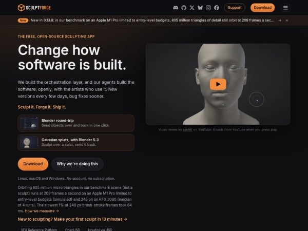

SculptForge 整合雕刻與資產整理，AI 功能可另行關閉
SculptForge 是免費開源的獨立雕刻工具，整合重拓撲、UV、貼圖與烘焙，並提供 Blender、Maya 與 Unreal Engine 的交接功能。程式仍在早期釋出階段，AI 生成服務與一般離線雕刻有不同使用條件。

製作案例 ★★★☆☆
完整分析
雕刻細節可接續重拓撲與烘焙
程式提供多層細分和動態拓撲，Quad Remesh 產生以四邊形為主的網格，再用 Project Detail 投射原始細節。UV 接縫、UDIM 打包及多種貼圖烘焙也在同一套工具內。
交接功能保留既有製作環境
透過專用附加元件或工具架可與 Blender、Maya 交換模型；Blender 更新既有物件時保留變換、材質與修改器。另有 LOD 生成與直接傳送 Unreal Editor 的功能，供資產整理後繼續使用。
開源本體與外部 AI 條件分開
本體採 GPL v3.0 或更新版，普通雕刻可離線且不需帳號；AI 功能可關閉，生成內容的使用條件取決於所接模型或服務。直接傳送 Unreal 另須啟用 Python 編輯器外掛及遠端執行設定。